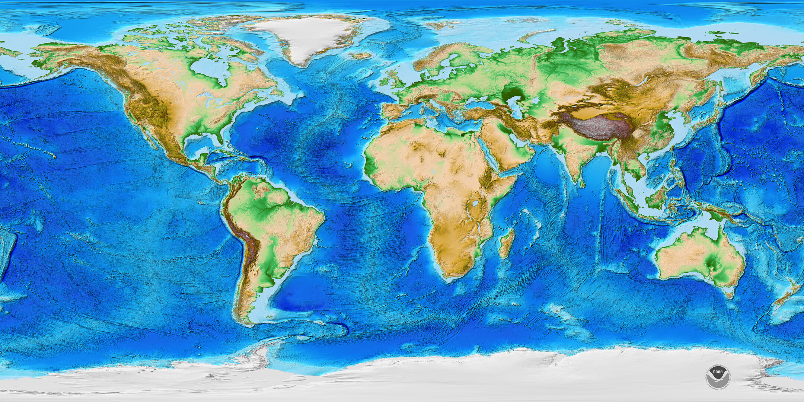
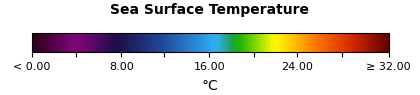

٢٢ربيع الأول١٤٤٨ هـ
الجمعة، ٤ سبتمبر ٢٠٢٦
مساء الخير
السماء الآن
الأفق الغربي
الصلاة التالية
العشاء
بعد٠١:١٢:٤٨
القمر والهلال
ممكن بصعوبةفرصة الرؤية الليلة
٦٤من ١٠٠
المكث٤٧ دقيقةالاستطالة١١٫٨°عمر القمر٢١ ساعة
✦
المساعد العلمي
اسأل السماء
يمكنني شرح النتيجة وتحريك الزمن والمشهد أثناء الإجابة.
أهم التقاويم الحيّة في عرض واحد
محول التقويمات
اختر تاريخًا لترى مقابله في التقاويم الأوسع استعمالًا، مع فصل التقاويم المدنية عن الدينية والثقافية.
صفحة اليوم
التقويم البديل في بطاقة اليوم
اختر من تقاويم هذه الصفحة ما يظهر بدل الهجري الشمسي.
☾
الهجري القمريربيع الأول ١٤٤٨
أم القرىحنثرخجس
☀
الهجري الشمسيشهريور ١٤٠٥
شمسيشيدسچپج
◉
الميلاديسبتمبر ٢٠٢٦
غريغوريحنثرخجس
تحويل سريع
أدخل التاريخ
حُدّثت جميع التقاويم أدناه
التاريخ نفسه عبر العالم
١٤ تقويمًاأهم التقاويم الحيّة
تُحدّث البطاقات عند اختيار أي تاريخ.
ⓘ يبدأ اليوم عند الغروب في بعض التقاويم الدينية؛ لذلك قد يتغير التاريخ مساءً قبل منتصف الليل. التقويم الصيني والبهائي والبيزنطي معروضة هنا بحسب اليوم المدني المختار.
الشهر الحالي في موقعك
جارٍ تحديد الموسم…
—
مؤشر النشاط الاسترشادي——
من يناير إلى ديسمبر
خريطة الموسم السنوي
الألوان تقارن النشاط المحتمل داخل المنطقة المختارة، ولا تعني السماح القانوني بالصيد.
ذروةجيدمتوسطأقل نشاطًا
الأهداف الشائعة
—أفضل المواسم بحسب النوع
كيف أُعدَّت المواسم؟
يجمع العرض بين أنماط موسمية إرشادية للهجرة والتغذية وتكاثر الأنواع واعتدال البحر. لا يقدّم توقعًا يوميًا ولا بديلًا عن قرار الجهة المنظمة أو بيانات المصيد المحلية؛ فالنوع نفسه قد يختلف موسمه بين خليج وآخر وبين ساحل وآخر.
المسار السنوي
زراعة • حصاد • ذروةمتى يبدأ الموسم؟
ذروةحصادزراعةخارج النافذة
المحاصيل الأفضل في هذا الموسم
هذه المحاصيل هي الأفضل في الموسم الحالي وفق موقعك ومناخك؛ لأنها في الذروة أو الحصاد أو نافذة الزراعة.
قاعدة المحاصيل
—الفاكهة والخضراوات حسب الموسم
ⓘ
هذه نوافذ مناخية إرشادية وليست موعدًا ملزمًا. داخل المنطقة الواحدة قد يتغير الموعد بسبب الارتفاع، موجات الحر والبرد، البيوت المحمية، نوع الصنف، التربة، توفر الماء والأمراض؛ راجع مرشدًا زراعيًا محليًا قبل القرارات التجارية أو الكبيرة.
الشهر المحدد
جارٍ تحديد موسم المرعى…
—
قوة المرعى الإرشادية——
يناير — ديسمبر
خريطة تدفق المرعى السنوي
ذروةتدفقفرصة مشروطةهدوء
مصادر الرحيق والندوة
—أفضل المصادر في النطاق المختار
كيف تقرأ التقويم؟
الذروة تعني أفضل نافذة موسمية معتادة، وليست ضمانًا لتدفق الرحيق. يتقدم الإزهار أو يتأخر مع المطر والحرارة والارتفاع والرياح وحالة النبات.
الندوة العسلية ليست إزهارًا
هي مادة سكرية تجمعها النحل من إفرازات الأجزاء الحية للنبات أو من مخلفات الحشرات الماصّة للعصارة. ظهورها مشروط بوجود العائل والحشرة والطقس، وقد يدل في البساتين على آفة تحتاج متابعة متخصصة.
المصادر وحدود الدقة
بُني العرض على مفهوم التقويم الزهري لدى منظمة الأغذية والزراعة، وعلى المواسم المنشورة لمراعي النحل السعودية. المواعيد المحلية هي نقطة بداية للرصد؛ ويسجّل النحال تاريخ بدء الإزهار وانتهائه وقوة زيارة النحل سنويًا لرفع الدقة.
الحساب والرصد والوقت الرسمي
أوقات الصلاة والتحقق الشمسي
قارن الحساب بموضع الشمس أو اتجاه الظل مع إظهار نطاق الخطأ.
جارٍ حساب موضع الشمس…—
تحقق من وقت الظهر
صوّر اتجاه الظل أو الأفق؛ سنقارن السمت والارتفاع الظاهريين للشمس بالقيمة المحسوبة.
- دقة الموقع: ± ٦ م
- معايرة البوصلة: جيدة
- الأفق: يحتاج لقطة واضحة
إعداد الحساب
أم القرى — مكة المكرمة
زاوية الفجر١٨٫٥°العشاء٩٠ دقيقةالعصرظل ١×الأفقطبوغرافي
مكة المكرمة • تنبيهات محلية
المنبه
مواقيت اليوم والسنن والظواهر الفلكية في خط زمني واحد، مع بيان مصدر كل نتيجة ودقتها.
الموعد التالي
محسوبسنة الظهر القبلية
متبقي٠٠:٣٨:١٦قبل أذان الظهر بـ ١٠ دقائق
مواعيد قابلة للتعديل
تُحفظ التعديلات على هذا الجهاز.الجمعة والعيد والاستسقاء والإقامة
منبّهات الإقامة التقديرية
حدد عدد الدقائق بعد الأذان. هذه تقديرات محلية وليست مواعيد صادرة من المسجد.
مسار الشمس والعبادات
الشروق والإشراق والضحى
الإشراق هو صلاة الضحى في أول وقتها؛ والفصل بين التنبيهين لا يعني أنهما صلاتان مختلفتان.
☀
محسوب
الوقت الفلكي ٦:٢٠ ص • الضابط المختار: ارتفاع الشمس قدر رمح • النتيجة الشرعية ٦:٢٢ ص
ثقة النموذج ٩٢٪الشروق: لحظة طلوع الشمس، ولا تُصلّى نافلة الإشراق عندها. تبدأ الصلاة بعد ارتفاع الشمس قدر رمح، أي بعد الشروق بنحو ربع ساعة تقريبًا، ويختلف ذلك باختلاف الموقع والفصل.
الإشراق والضحى: أقلها ركعتان. من صلاها في أول وقتها فقد صلى الضحى، فلا تلزمه إعادتها. يمتد وقتها إلى قبيل الزوال، والأفضل عند اشتداد الضحى؛ والتنبيه المتأخر تذكير عملي، وليس تحديدًا شرعيًا ثابتًا لأفضل وقت.
المصدر: الإشراق والضحى — ابن باز ↗صلاة الليل
صلاة الوتر
وقتها بعد أداء صلاة العشاء وسنتها إلى طلوع الفجر. آخر الليل أفضل لمن يثق باستيقاظه، ومن خشي فواتها أوتر قبل النوم.
دخول وقت العشاء لهذه الليلة—يبدأ الوتر بعد أداء العشاء وسنتها
نهاية وقت الوتر عند الفجر—
تذكير الوتر لهذه الليلة—
الموعد المختار للتذكير فقط؛ إن لم تُصلِّ العشاء وسنتها فأدّهما قبل الوتر. تتغير الأوقات بحسب موقعك وتاريخ الليلة. تفعيل التنبيه وإيقافه من مركز التنبيهات أعلاه.
المصدر: وقت الوتر — ابن باز ↗السنن الرواتب
تنبيه مستقل لكل سنة
٢قبل الفجر٤:٣٩ ص • قبل الفريضة
٤قبل الظهر١٢:١٠ م • مثنى مثنى
٢بعد الظهربعد الفريضة
٢بعد المغرببعد الفريضة
٢بعد العشاءبعد الفريضة
◇ يمكن لاحقًا اختيار المذهب أو الجهة الشرعية لعرض التفاصيل المعتمدة، مع بقاء إعداد كل تنبيه بيد المستخدم.
العام الحالي + خمس سنوات
مواعيد الكسوف والخسوف وصلاتهما
تظهر نافذة الصلاة فقط عندما تكون الظاهرة مرئية من الموقع المختار.
الظواهر في ٢٠٢٦متوقع
ⓘ
تُحسب التماسات والارتفاعات لموقعك بمحرك Astronomy Engine، وتُقص نافذة الرؤية عند الشروق أو الغروب. يعرض المشهد الفضائي هندسة الظل بدقة مفاهيمية مع التصريح بأن الأحجام والمسافات غير مقياسية.
محاكاة هندسية مرتبطة بالحساب
كسوف شمسي جزئي
مكة المكرمة • عرض من الفضاء
قبل التماس الأول
١:٣٤ مقبل الذروة بـ ١٨ دقيقة
المحاذاة الفلكيةنوع الظلالأحجام غير مقياسية
البداية١٢:٥٨الذروة١:٥٢النهاية٢:٤٧فترة الرؤية المحلية١٢:٥٨–٢:٤٧
صوت مستقل لكل صلاة ومنبّه
محفوظ على هذا الجهازالأصوات
اختر الأذان الأول بصوت الشيخ عبدالعزيز الزري أو الأذان الثاني بصوت الشيخ منصور التميمي، ثم أضف ملفًا صوتيًا أو تسجيلًا شخصيًا عند الحاجة.
تعيين الأصوات
اضغط «استماع» لاختبار الاختيارصوت كل منبّه
من ملفات الجهاز
رفع ملف صوتي
من الميكروفون
تسجيل صوت
مدة التسجيل٠٠:٠٠
الأصوات المضافة
مكتبتي
الأذان الأول للشيخ عبدالعزيز الزري هو الاختيار الافتراضي. ويتاح الأذان الثاني للشيخ منصور التميمي لكل منبّه. يمكنك إضافة تسجيل شخصي لكل منبّه في أي وقت. الأصوات المضافة لا تُرفع إلى الإنترنت.
منصة مجتمع صوتية
مشاركة مجتمعيةمنصة الأذان والتلاوات والأدعية
استمع إلى التسجيلات المنشورة، وشارك صوتك في القسم المناسب، ثم أضف ما تختاره يدويًا إلى مكتبة أصواتك.
الأذان
أذان بصوتك ليستعمله من يختاره يدويًا في تنبيهاته.
التلاوات
تلاواتك المسجلة من القرآن للاستماع والمشاركة المجتمعية.
الأدعية
أدعية مسجلة بصوتك ليتاح للناس الاستماع إليها.
منصة المجتمع الصوتية
شارك الأذان بصوتك واستمع إلى أصوات المجتمع. التسجيلات مرتبة من أول تسجيل إلى آخر تسجيل.
جارٍ تحميل المتصدر…
المكافأة لصاحب التسجيل الأكثر إعجابًا في كل قسم بعد اعتماد شروط المسابقة. القيمة وموعد الإغلاق لم يُحددا بعد، ولا يوجد صرف تلقائي حاليًا.
شارك الأذان بصوتك
تسجيلات الأذان — الأقدم أولًا
الموقع والوقت والسماء
حساب فلكيالقمر
منازل القمر وتاريخه ومعلوماته العامة، مع راصد الهلال والحسابات المحلية في القسم الأخير.
النظام العربي للمنازل
القمر يمر على ٢٨ منزلة في دورته النجمية
المنازل تقسيم تراثي وفلكي لمسار القمر قرب دائرة البروج. استخدمها العرب وغيرهم في ضبط الليالي ومواسم المطر والسفر والزراعة، ويعرضها التطبيق هنا كمعرفة سماوية لا كأحكام تنجيمية.
المنزلة الحالية تقديريًا———
القائمة الكاملة
الآنالمنازل الثمانية والعشرون
كل منزلة تمثل نحو ١٢٫٨٦° من مسار القمر. الحدود المعروضة تقسيم متساوٍ للتعليم؛ والربط الدقيق بالنجوم يحتاج أطوالًا نجمية ومراجع تاريخية لكل تقليد.
في التطوير اللاحق يمكن ربط كل منزلة بطلوعها الحقيقي من موقع المستخدم، وبالمقابلات الهندية «ناكشاترا» والصينية «شيو»، مع الفصل بين الحساب الفلكي والاستخدامات التراثية.
تاريخ طبيعي وبشري
القمر سجل قريب لتاريخ الأرض
سطحه يحفظ آثار الاصطدامات والبراكين القديمة، وحركته تضبط المد والجزر وتطيل اليوم الأرضي ببطء. لذلك فدراسته ليست فضولًا بعيدًا؛ هي نافذة على بدايات الأرض نفسها.
العمر التقريبي٤٫٥١ مليار سنةقريب من عمر الأرضفرضية الاصطدام العملاق هي التفسير الأوسع قبولًا
نشأة القمر
تكوّن غالبًا بعد اصطدام جرم كبير بالأرض الفتية، فتجمعت المواد المقذوفة في مدارها ثم بردت لتكوّن القمر.
قشرة أولية ومحيط صهارة
برد السطح الخارجي تدريجيًا، وبدأت القشرة القديمة والمرتفعات القمرية في الظهور.
بحار قمرية بازلتية
امتلأت أحواض اصطدام كبيرة بحمم داكنة، وهي المناطق التي نراها اليوم كبقع واسعة على وجه القمر.
التقاويم والمنازل
راقب الناس أطوار القمر وربطوا الليالي والمواسم بمنازله، ومنها التقويم الهجري ورصد الأهلة.
رؤية الوجه البعيد
أظهرت مركبة لونا ٣ السوفيتية أول صور للجانب البعيد من القمر، وهو مختلف في تضاريسه عن الوجه القريب.
هبوط الإنسان والخرائط الحديثة
بدأت عينات أبولو وقياسات المركبات المدارية مرحلة علمية دقيقة لفهم الصخور والجاذبية والماء المتجمد قرب القطبين.
معلومات عامة عن القمر
رفيق الأرض الأقرب
القمر ليس مجرد قرص مضيء؛ هو جسم صخري كبير له مدار مائل، ودورته تضبط الأطوار والشهور القمرية والكسوف والخسوف والمد والجزر.
متوسط البعد٣٨٤٬٤٠٠ كم
القطر٣٬٤٧٥ كم
الشهر الاقتراني٢٩٫٥٣ يوم
الشهر النجمي٢٧٫٣٢ يوم
ميل المدار٥٫١° تقريبًا
الجاذبية السطحية١⁄٦ جاذبية الأرض
دورة الضوء كما نراها من الأرض
مراحل القمر الثماني
مراحل القمر هي تغيّر شكل الجزء المضيء الذي نراه من القمر بسبب تغيّر موضعه بالنسبة إلى الأرض والشمس.
من محاق إلى محاق٢٩٫٥٣ يومًافي المتوسط
١
المحاق
القمر بين الأرض والشمس تقريبًا، فلا يظهر وجهه مضيئًا لنا.
٢
الهلال المتزايد
يبدأ جزء رقيق مضيء بالظهور بعد المحاق ويزداد ليلة بعد ليلة.
٣
التربيع الأول
نرى نصف قرص القمر مضيئًا بعد نحو ربع الدورة الاقترانية.
٤
الأحدب المتزايد
يصبح أكثر من نصف القرص مضيئًا، ويواصل الضوء ازدياده.
٥
البدر
تكون الأرض بين الشمس والقمر تقريبًا، فنرى وجهه مضيئًا كاملًا.
٦
الأحدب المتناقص
يبدأ الجزء المضيء بالتناقص بعد البدر، مع بقاء أكثر من نصفه مضيئًا.
٧
التربيع الأخير
نرى نصف القرص مضيئًا مرة أخرى بعد نحو ثلاثة أرباع الدورة.
٨
الهلال المتناقص
يبقى جزء رقيق مضيء قبل أن يعود القمر إلى المحاق.
الشهر الاقتراني: الدورة من محاق إلى المحاق التالي، ومتوسطها ٢٩ يومًا و١٢ ساعة و٤٤ دقيقة تقريبًا.
المراحل والمنازل مختلفتان: المرحلة تصف مقدار إضاءة قرص القمر، أما المنزلة فتصف موضعه أمام النجوم.
طريقة قراءة الرسم: الاتجاه المرسوم للجزء المضيء اصطلاحي عند جعل شمال القمر إلى الأعلى؛ وقد يبدو الهلال مائلًا في السماء بحسب الموقع والوقت. ظل الأرض لا يسبب المراحل، وإنما يظهر أثره عند الخسوف.
مشهد محلي ثلاثي الأبعاد
حساب فلكي محليالقمر والنجوم خلال شهر
قارن موضع القمر في الساعة نفسها من كل يوم؛ فالنقاط تبين حركته الظاهرية فوق أفق الرائي أمام الخلفية النجمية.
تعذّر تشغيل النموذج ثلاثي الأبعاد على هذا الجهاز.
—جارٍ الحساب…
تعذّر تشغيل المجسم على هذا الجهاز. الحسابات والمخطط أدناه متاحان.
حجم القمر مكبّر للتوضيحقبة السماء حول الراصد • اسحب للدوران
مسار القمر فوق الأفقتحت الأفقالشمس
إعدادات الرصد والموقع
العوائق كالمباني والجبال تحجب جزءًا من السماء. يمثل هذا الخيار ارتفاعًا موحّدًا في جميع الاتجاهات؛ لا تُجلب التضاريس أو حالة الطقس تلقائيًا.
رؤية الهلال مساء التاريخ المختار
جارٍ الحساب…
- غروب الشمس
- —
- شروق القمر في هذا اليوم
- —
- غروب القمر في هذا اليوم
- —
- مكث القمر بعد الشمس
- —
وجود القمر فوق الأفق لا يثبت إمكان رؤيته. التقدير لا يثبت رصدًا ميدانيًا أو إعلانًا رسميًا.
مسار الارتفاع خلال اليوم
الأزرق: القمر • الذهبي: الشمس • الخط المتقطع: العوائق. الصفر هو الأفق الفلكي؛ الأوقات محلية.
طريقة الحساب ومصادره
المواضع محلية بحسب إحداثيات الراصد، مع انكسار جوي معياري للعرض. الشروق والغروب لحافة القرص على أفق مستوٍ؛ قد يختلف الرصد بسبب الطقس والتضاريس.
تقدير الهلال بمعيار عودة: فرق الارتفاع وعرض الهلال محليان دون انكسار، عند غروب الشمس مضافًا إليه أربعة أتساع المكث. يُطبَّق على الهلال المسائي المتزايد ضمن نطاق الأهلة الرفيعة، ولا تُعرض نسبة ثقة مختلقة.
بحث محمد عودة ومعيار الرؤية ↗محرك الحساب Astronomy Engine ↗العوامل المؤثرة في رؤية الهلال ↗الخريطة العالمية ومقارنة مواقع الرصد
اختر نقطة على الخريطة لتغيير الموقع، أو أدخل إحداثياتها في الإعدادات. النقاط الجديدة تستخدم UTC حتى تختار منطقتها الزمنية.
المقارنة في اللحظة العالمية نفسها. أوقات الغروب بحسب اليوم المحلي لكل موقع. خريطة اليابسة: Natural Earth، ملكية عامة.
سجلات الرصد والتوثيق
لا يوجد سجل ميداني مضاف لهذا الموقع والتاريخ. الحساب أعلاه ليس سجل مشاهدة.
استعرض تقارير المشروع الإسلامي لرصد الأهلة ↗السجلات منقولة عن مصدرها، والحساب المعاد مستقل عنها. سجل مشاهدة في وقت محدد لا يعني الرؤية طوال اليوم، ولا يمثل قرارًا رسميًا.
قبة سماوية تفاعلية
السماء ثلاثية الأبعاد
غيّر الزمن أو اسحب المشهد لمتابعة مسارات الأجرام حول الأفق.
شمالشرقجنوبغرب
☀الشمستحت الأفق ٤٫٢°
◔القمرارتفاع ١٨٫٦°
٧:٤٠ م٤ سبتمبر ٢٠٢٦
طقس الفضاء • تحديث مستمر
المجال المغناطيسي حول الأرض
نموذج ثلاثي الأبعاد تعليمي يوضح كيف تحمي المغناطيسية الأرض من الرياح الشمسية وكيف يتغير شكلها أثناء العواصف.
جارٍ جلب البيانات—
المحاكاة الحية
الأرض داخل الغلاف المغناطيسي
اتجاه الشمس ←
الأرض
المسافات والأحجام غير مقياسية • العرض توضيحي
السجل والتوقع
العواصف الشمسية والمغناطيسية
السجل التاريخي مختصر، والتوقعات تتغير مع وصول قياسات جديدة. لا يُعد التوقع وعدًا بحدوث العاصفة.
ⓘ المؤشر Kp مقياس عالمي لنشاط المجال المغناطيسي من ٠ إلى ٩. تظهر الشفق القطبي عادةً عند ارتفاع النشاط، لكن الرؤية تعتمد أيضًا على الموقع والظلام والطقس.
الأرض والهواء والفضاء القريب
نموذج علمي تفاعليالمقياس مكبّر بصريًا
طبقات الغلاف الجوي
استكشف نموذجًا ثلاثي الأبعاد تعليميًا يوضح الطبقات الرئيسة، الحدود التقريبية، الأوزون، ومناطق الترقق المعروفة باسم «ثقب الأوزون».
المجسم ثلاثي الأبعاد
الأرض محاطة بطبقات متدرجة
الطبقة المحددةالستراتوسفير١٢–٥٠ كم تقريبًا
الفضاء ↑
سطح الأرض
منطقة ترقق الأوزون
فوق القطب الجنوبي
فوق القطب الجنوبي
اسحب للتدوير • عجلة الفأرة للتقريب
تعذّر تشغيل النموذج على هذا الجهاز.
يمكنك قراءة خصائص الطبقات والشرح العلمي أسفل المجسم.ⓘ ارتفاعات الطبقات والفواصل بينها مكبّرة بصريًا كي تُرى. الطبقة الأوزونية ليست غلافًا صلبًا، وثقب الأوزون ليس فراغًا مفتوحًا في الهواء.
الثقوب والترقق
ما المقصود بثقب الأوزون؟
هو انخفاض شديد وموسمي في عمود الأوزون فوق القطب الجنوبي، ويُستعمل حدّ ٢٢٠ وحدة دوبسون لوصف «منطقة الثقب». لا يعني ذلك انفتاح ثقب خالٍ من الهواء؛ فالنيتروجين والأكسجين وبقية الغازات تبقى موجودة.
الستراتوسفيرالربيع الجنوبيكلور وبروم
الأيونوسفير والطقس الفضائي
اضطرابات أخرى ليست ثقوبًا
الأيونوسفير منطقة متأينة متغيرة داخل الغلاف العلوي، وقد تظهر فيها اضطرابات أو فقاعات بلازمية تؤثر في الاتصالات والملاحة. هذه الظواهر ليست ثقبًا جويًا مماثلًا لثقب الأوزون.
أيونات وإلكتروناتشفق قطبيتأثر بالعواصف
من سطح الأرض إلى الفضاء
خصائص الطبقات في نظرة واحدة
الحدود تقريبية وتتغير بحسب خط العرض والفصل والنشاط الشمسي.
| الطبقة | الارتفاع التقريبي | الاتجاه الحراري | أهم ما يميزها |
|---|
المصادر والمنهج العلمي
بُنيت الحدود والشرح من المراجع التعليمية والعلمية الرسمية. تختلف الحدود بين المراجع لأن الانتقالات بين الطبقات تدريجية وليست جدرانًا حادة.
ناسا: طبقات الغلاف الجوي ↗ناسا: ما هو الغلاف الجوي؟ ↗NOAA: الأوزون وثقب الأوزون ↗NOAA: كيف يتشكل ثقب الأوزون؟ ↗من القشرة إلى المركز
نموذج تعليميباطن الأرض والصفائح
استكشف الطبقات التي تكوّن الكوكب، ثم تعرّف إلى الصفائح المتحركة وحدودها التي تتركز حولها معظم الزلازل والبراكين.
مقطع تفاعلي
٠–٧٠ كمطبقات الأرض في منظور واحد
اضغط على طبقة أو اخترها من القائمة
سطح متحرك ببطء
تعليمي • غير لحظيالصفائح التكتونية وحدودها
تتحرك الصفائح عادةً سنتيمترات قليلة في السنة. لا تُعرض هذه الصفحة تنبؤًا بموعد زلزال أو بركان.
جارٍ تجهيز الخريطة…
خريطة عالمية تعليمية: القارات مرسومة من بيانات جغرافية، وحدود الصفائح مبسطة للتوضيح وليست للإنذار أو الملاحة.
تباعد
قاع بحر يتسع ببطء
عند حيد وسط المحيط تصعد مواد ساخنة من الوشاح وتبرد، فتضيف قشرة محيطية جديدة بين صفيحتين تتباعدان.
الزلازل
تتركز معظم الزلازل قرب حدود الصفائح، لكن مقدار الضرر يعتمد على العمق، والمسافة، ونوع التربة، وجودة المباني.
البراكين
تكثر قرب الاندساس والتباعد والنقاط الساخنة. وجود بركان لا يعني أن ثورانه وشيك.
المجال المغناطيسي
حركة الحديد السائل في اللب الخارجي مصدر رئيس للمجال المغناطيسي العالمي المعروض في التبويب السابق.
المصادر والمنهج العلمي
تُستنتج البنية الداخلية أساسًا من موجات الزلازل؛ الحدود بين الطبقات انتقالات علمية تقريبية وليست جدرانًا مرئية مباشرة.
ناسا: طبقات الأرض ↗هيئة المسح الجيولوجي الأمريكية: مخاطر الزلازل ↗هيئة المسح الجيولوجي الأمريكية: البراكين ↗فوق مستوى البحر وتحته
أطلس الأرضسطح الأرض والمحيطات
استكشف تضاريس الكوكب، وقارن أعلى القمم بأعمق الخنادق، وتعرّف إلى حركة مياه المحيط وحرارتها.
خريطة التضاريس والمحيطات

NOAA NCEI · ETOPO1خريطة مرجعية ثابتة؛ ليست رصدًا آنيًا
أعمقمياه ضحلةسهولمرتفعات
ألوان مظللة للتضاريس وليست مقياسًا عدديًا لكل بكسل؛ الأبيض قد يمثل الجليد. إسقاط الخريطة يوسّع المساحات قرب القطبين، فلا يُستخدم لمقارنة مساحات الدول.
تيار دافئ نسبيًاتيار بارد نسبيًاالأسهم تشير إلى الاتجاه العام
مسارات تعليمية مبسطة لأبرز التيارات السطحية، وليست قياسات لسرعتها أو مواقعها اللحظية. يتغير بعضها موسميًا، خصوصًا في المحيط الهندي.

تحليل MUR يومي يجمع قياسات الأقمار الصناعية والقياسات الميدانية، وليس قياسًا لحظيًا أو لحرارة المياه العميقة. قد يتأخر توفر اليوم أو توجد فجوات؛ يظهر تاريخ الصورة المعروضة صراحةً.
مقارنة بمقياس حقيقي
نفس المسافة الرأسية تمثل نفس عدد الأمتار في العمودين. المقارنة للارتفاع والعمق، لا لحجم الجبل أو مساحة المحيط.
أعلى القمم وأعمق المحيطات
| المعلم | الارتفاع / العمق |
|---|
أعماق المحيطات من مسح Five Deeps المنشور لدى BGS عام ٢٠٢١؛ ليست متوسطات أعماق المحيطات. تختلف القياسات بحسب الموقع والطريقة؛ تورد NOAA نحو ١٠٬٩٣٥ م لتشالنجر، بينما نعتمد هنا ١٠٬٩٢٤ م للمقارنة المتسقة مع المسح نفسه.
المدّ والجزر وعلاقتهما بالقمر
محاكاة تعليمية • ليست توقعًا محليًاغيّر موضع القمر لتشاهد كيف يزيد اصطفاف الشمس والأرض والقمر المدى بين المدّ والجزر، وكيف يقل عند التربيعين.
المحور الأفقي: دورة زمنية افتراضية. المحور الرأسي: تغير نسبي بلا وحدة، وليس ارتفاعًا بالأمتار. يعرض المثال نمطًا نصف يومي؛ لا تتبع جميع السواحل هذا النمط.
يؤثر شكل الساحل وعمق الحوض والطقس في الارتفاع والتوقيت، وقد يتأخر أكبر مدى عن المحاق أو البدر. لا تعتمد على هذا النموذج للملاحة أو الغوص أو تقرير سلامة الشاطئ.
المصادر وحدود الدقة
- خريطة ETOPO1 مظللة لليابسة وقاع البحر؛ نسخة مرجعية تاريخية وليست ETOPO 2022. المصدر NOAA NCEI، والصورة J. Varner وE. Lim / CIRES. بيانات الخريطة لا تُستخدم لاستخراج قيمة دقيقة لقمة أو خندق.
- الارتفاعات فوق مستوى البحر؛ الأعماق تحته. عرض المواقع الجغرافية تقريبي، والأرقام المرجعية مستقلة عن دقة صورة الأطلس.
- حرارة البحر من NASA GIBS / GHRSST MUR. عند تعذر الاتصال تظهر نسخة محفوظة مع تاريخها، دون تسميتها بيانات حالية.
- التيارات والمدّ والجزر رسوم تعليمية؛ لا توجد في هذا التبويب خدمة تنبؤ محلي بالمدّ أو تنبيه بحري.
السماء والزمن عبر الحضارات
الطوالع والبروج والكوكبات
شاهد ما يطلع من موقعك، ثم قارن أسماء السماء ومعانيها ومواسمها وتقويماتها عبر العصور.
جارٍ تجهيز خريطة النجوم…
هذا العرض توضيحي للموروث عبر الحضارات. لحساب المواضع وفق التاريخ والموقع استخدم «الأبراج والطوالع».
الأفق الشرقي • مكة المكرمة
السماء وفق النظام العربي
الشرق ٩٠°خط الأفق
الثرياالاسم في هذا النظام
٤:٥٦ ص٤ سبتمبر ٢٠٢٦
الظاهرة الفلكيةطلوع الجرم واتجاهه وارتفاعه قابلة للحساب.
الارتباط الموسميملاحظة محلية قد تختلف باختلاف المناخ والعصر.
الموروث والمعتقديعرض بوصفه تاريخًا ثقافيًا، لا حقيقة علمية.
بحث موحّد
موسوعة أسماء السماء
⌕
✦
موثق تاريخيًا
الثريا
الثُّرَيَّا • al-Thurayyā
معنى الاسم وأصله
اسم عربي يدل على اجتماع نجوم صغيرة كثيرة، وارتبط بالعنقود النجمي اللامع المعروف بالثريا.
المقابل الفلكي الحديث
عنقود نجمي مفتوح M45 في كوكبة الثور.
الظاهرة التي لوحظت
استُخدم طلوعها وغروبها علامة موسمية للأنواء والزراعة والسفر.
التفسير والتوثيق
التزامن ناتج من ثبات موعد ظهورها النسبي في السنة، ولا يثبت تأثيرها السببي في المطر.
القوائم الكاملة
١٢ اسمًاالبروج والمنازل والطوالع
خريطة معرفية عالمية
اختر حضارة لتغيّر أسماء السماء
تظهر الأسماء بلغتها الأصلية ومعناها والمقابل الفلكي ودرجة التوثيق.
الثريا
العالم العربي والإسلامي
سماء الأنواء ومنازل القمر
استُخدمت النجوم في معرفة الاتجاهات والفصول ومواسم السفر والزراعة، مع نظام منازل القمر الثمانية والعشرين.
الشمس والقمر والمواسم
التقاويم الحضارية
مقارنة بنية التقويم والظواهر السماوية التي ضُبط بها.
الصين
التقويم الصيني الشمسي القمري
أشهر قمرية وشهر كبيس، مع ٢٤ حدًا شمسيًا ودورة ستينية.
الهند
البانشانغا والتقاويم الهندية
تيثي، فارا، ناكشاترا، يوغا وكارانا، مع تقاويم شمسية إقليمية.
المايا
تزولكين وهاب والعد الطويل
دورة ٢٦٠ يومًا مع سنة ٣٦٥ يومًا ودورة تقويمية من ٥٢ سنة.
الأزتك
تونالبوالّي وشيوهبوالّي
دورتان من ٢٦٠ و٣٦٥ يومًا تلتقيان في دورة النار الجديدة.
مصر القديمة
التقويم المدني والعشريات
١٢ شهرًا من ٣٠ يومًا وخمسة أيام مضافة، مع ضبط نجمي موسمي.
إثيوبيا وإريتريا
التقويم الإثيوبي
اثنا عشر شهرًا من ٣٠ يومًا وشهر قصير من خمسة أو ستة أيام.
شمال إفريقيا
التقويم الأمازيغي
تقويم شمسي موسمي مرتبط بالأعمال الزراعية وتعاقب الفصول.
الإنكا والأنديز
التقويم الشمسي القمري
إعادة بناء تاريخية لدورات شهرية ومراصد أفقية مرتبطة بالزراعة.
مقارنة مباشرة
كيف رأت حضارتان السماء نفسها؟
ⓘ
تُقارن الأنظمة في سياقها الأصلي؛ لا تُحوَّل المنازل الصينية أو الناكشاترا الهندية تلقائيًا إلى الأبراج الغربية.
من ٣٠٠٠ ق.م إلى ٢١٠٠م
محاكاةتغيّر السماء عبر العصور
نجم إرشادي في الحقبةالنجم القطبي
السنة المختارة٢٠٢٦م
دورات زمنية متداخلة
التزامن القمري–الشمسي
مجسم زمني يوضح انتقال الشهر الهجري داخل السنة الشمسية، ويفصل ذلك عن تقارب دورة ميتون.
مجسم حلزوني ثلاثي الأبعاد
عودة الشهر الهجري عبر المواسم
موضع البداية المرجعيالشتاء٠٫٠ قمرية • ٠٫٠ شمسية
اسحب لتدوير الحلزون
المواسم على المسارتتغير الفترات تلقائيًا مع تاريخ البداية
السنوات القمرية المتوسطة٠٫٠ سنة قمرية
العودة المستمرة الأولى٣٣٫٥٨٥ قمرية = ٣٢٫٥٨٥ شمسية
التقارب التقويمي القريب٣٤ هجرية ≈ ٣٣ شمسية، بفارق نحو ٤٫٥ أيام
تقارب أقوى لاحقًا٦٧ قمرية ≈ ٦٥ شمسية، بفارق نحو ١٫٨٥ يوم
تقويم شمسي–قمري تاريخي
المصدر التاريخي ↗من هو ميتون، وما هو تقاربه؟
ميتون فلكي ورياضي أثيني من القرن الخامس قبل الميلاد، ارتبط اسمه بدورة أعلنت في أثينا نحو ٤٣٢ ق.م. وهي وسيلة لتقريب أطوار القمر من الفصول، وليست قاعدة للتقويم الهجري القمري.
١٩ سنة شمسية٦٩٣٩٫٦٠٢ يومًا
≈٢٣٥ شهرًا اقترانيًا٦٩٣٩٫٦٨٨ يومًا
الفارق المتوسط: ساعتان و٥ دقائقلماذا ٢٣٥ شهرًا؟
١٩ سنة من ١٢ شهرًا تعطي ٢٢٨ شهرًا فقط؛ لذلك يضيف التقويم الشمسي–القمري ٧ أشهر إقحامية خلال ١٩ سنة ليبلغ ٢٣٥ شهرًا ويحافظ على قربه من الفصول.
لماذا لا تنطبق على رمضان؟
التقويم الهجري يبقى ١٢ شهرًا في كل سنة ولا يضيف الأشهر السبعة. لذلك ينتقل رمضان عبر الفصول؛ بعد ١٩ سنة هجرية يكون الانزياح الموسمي نحو ٢٠٦٫٦ أيام.
العلاقةما الذي تقارنه؟معناها في التطبيق
دورة ميتون١٩ سنة شمسية ↔ ٢٣٥ شهرًا اقترانيًاتقويم شمسي–قمري يحتاج ٧ أشهر إقحامية
عودة الشهر عبر الفصولسنة هجرية من ١٢ شهرًا ↔ السنة الشمسيةعودة موسمية مستمرة بعد ٣٣٫٥٨٥ سنة قمرية
٣٤ هجرية ≈ ٣٣ شمسيةسنوات صحيحة العددتقريب بفارق نحو ٤٫٥ أيام
٦٧ هجرية ≈ ٦٥ شمسيةسنوات صحيحة أكبرتقريب أدق بفارق نحو ١٫٨٥ يوم
الخلاصة: ميتون يحل مشكلة إبقاء الأشهر القمرية مرتبطة بالمواسم بإضافة أشهر؛ أما هذا التطبيق فيعرض كيف ينتقل الشهر الهجري غير المُقحم بين المواسم.
طريقة الحساب والقيم الفلكية المتوسطة ↗ⓘ
الحلزون تمثيل زمني وليس مدارًا حقيقيًا للقمر. أما تقارب ميتون فيقارن ١٩ سنة شمسية بـ٢٣٥ شهرًا اقترانيًا، ويخص أنظمة شمسية–قمرية تستخدم الإقحام؛ ولا يمثل عودة رمضان أو التقويم الهجري القمري إلى الفصل نفسه.
الأرض والفصول • مجسم WebGL
نموذج هندسي تفاعليميل محور الأرض أثناء دورانها حول الشمس
تابع بقاء محور الدوران موازيًا تقريبًا لاتجاهه في الفضاء، وكيف يغيّر ذلك زاوية سقوط أشعة الشمس على نصفي الكرة.
منظور من خارج المدار
المحور ثابت الاتجاه خلال السنة
٥ سبتمبر ٢٠٢٦الصيف في النصف الشماليالشمال ما زال مائلًا قليلًا نحو الشمس
زاوية الميل الحالية٢٣٫٤٤°عن العمود على مستوى المدار
اسحب لتدوير المشهد • مرّر للتقريب
تعذر تشغيل WebGL على هذا الجهاز.
موضع الأرض في سنة ٢٠٢٦اليوم ٢٤٨ من ٣٦٥
دليل المصطلحين
ما معنى الانقلاب والاعتدال؟
الاسمان يصفان موضع الشمس الظاهري بالنسبة إلى خط الاستواء السماوي، لا تغيّر زاوية محور الأرض خلال السنة.
الانقلاب الشمسي
تبلغ الشمس أقصى ميل لها
تصل الشمس إلى أبعد موضع ظاهري شمال خط الاستواء أو جنوبه، ثم يبدأ اتجاه حركتها الظاهرية في الانعكاس؛ ولذلك سُمّي انقلابًا.
انقلاب يونيوأطول نهار شمالًا • أقصر نهار جنوبًاانقلاب ديسمبرأقصر نهار شمالًا • أطول نهار جنوبًا
الاعتدال
تعبر الشمس خط الاستواء
يصبح ميل الشمس الظاهري قريبًا من صفر درجة، ويتقارب طول الليل والنهار في أنحاء الأرض؛ ولذلك سُمّي اعتدالًا.
اعتدال مارسربيع شمالًا • خريف جنوبًااعتدال سبتمبرخريف شمالًا • ربيع جنوبًا
الانقلاب = أقصى ميل للشمسالاعتدال = عبور خط الاستواء السماوييتقارب الليل والنهار في الاعتدال، لكنهما لا يتساويان تمامًا بسبب حجم قرص الشمس والانكسار الجوي.
ⓘ
المقصود بمعدل الميل هنا: خلال السنة الواحدة تبقى الزاوية قرابة ٢٣٫٤٤° ولا تتبدل مع الفصول؛ التغير الحقيقي طويل الأمد بطيء جدًا ويظهر ضمن دورات ميلانكوفيتش.
الأرض من منظور القياس والجاذبية
شكل الأرض
الأرض شبه كروية، مفلطحة قليلًا عند القطبين. قارن شكلها المرجعي بالجيويد، ثم شاهد كيف يُظهر التضخيم فروقًا صغيرة جدًا.
استكشف المجسم
الإهليلج المرجعي • WGS 84المقياس الحقيقي ×١
القطب الشماليالقطب الجنوبي
اسحب للتدوير • قرّب بإصبعين أو بعجلة الفأرة
تعذّر عرض المجسم الثلاثي الأبعاد على هذا الجهاز. جرّب إعادة تحميل الصفحة أو متصفحًا يدعم WebGL.
افتح العرض الأصلي لناسا ↗هذه النسبة الحقيقية بين نصفي القطر؛ التفلطح صغير جدًا ولا يظهر بوضوح من الفضاء.
ارتفاع الجيويد عن الإهليلج بالمتر؛ الألوان ليست ارتفاع الجبال ولا شدة الجاذبية.
−١١٠ م٠ م+٩٠ م
تُحمّل بيانات الجيويد عند فتح المشهد.
المصادر وطريقة البناء وحقوق الاستخدام
البيانات والحساب
التفلطح محسوب من أبعاد WGS 84. ارتفاعات الجيويد من EGM96 لوكالة NGA، موزعة عبر PROJ، ومأخوذة كل درجة من الشبكة الأصلية ذات فاصل ١٥ دقيقة قوسية. تُستكمل القيم بين النقاط بالاستيفاء الخطي الثنائي.
القيم ثابتة وليست رصدًا آنيًا. هذا عرض تعليمي مبسّط؛ لا يُستخدم للمساحة الدقيقة. حدود القارات من Natural Earth.
ما الذي يتضخّم؟
في وضع التفلطح يُضرب معامل التفلطح في القيمة المختارة. في وضع الجيويد يُضرب ارتفاعه عن الإهليلج فقط، مع الإبقاء على التفلطح الحقيقي. الارتفاع يُضاف باتجاه العمود على الإهليلج.
يبقى مفتاح الألوان بالأمتار الأصلية مهما تغير التضخيم. زر «المقياس الحقيقي» يعيد معامل العرض إلى واحد.
إعادة الاستخدام
بيانات EGM96 المستخدمة هنا ضمن الملكية العامة. تسمح إرشادات ناسا عمومًا بالاستخدام التعليمي والإخباري لموادها مع ذكر المصدر، ومراعاة الاستثناءات المسجلة للغير وعدم الإيحاء بتأييد ناسا للتطبيق.
أُنشئ هذا العارض بصورة مستقلة؛ لم تُنقل بيانات مجسم ناسا أو شعاراتها إليه.
تعلم بالحركة • ألعاب فلكية
تحديات تفاعلية
الألعاب التعليمية
خمس مهام للرصد
صائد الهلال
٠ / ٥ مهام٠ نقطة
جارٍ حساب مواقع الشمس والقمر…
تعذّر تحميل حسابات اللعبة. أعد المحاولة.
مخطط مواضع؛ حجم الهلال مكبّر. ظهوره في الرسم لا يعني إمكان رؤيته في السماء.
- ارتفاع القمر
- الاستطالة عن الشمس
- الجزء المضاء
- مكث القمر بعد الشمس
كيف تُحسب اللعبة؟
المواضع محسوبة للرياض في تواريخ تدريبية ثابتة بمحرك Astronomy Engine. يُقيّم الهلال المسائي بمعيار عودة عند وقت غروب الشمس مضافًا إليه أربعة أتساع مكث القمر، باستخدام فرق الارتفاع وعرض الهلال المحليين دون انكسار جوي.
لقبول محاولة داخل اللعبة: اختر وقتًا يبعد ٦ دقائق أو أقل عن وقت التقييم، واجعل قرص القمر فوق العائق، واختر الأداة البصرية للفئتين B وC. الفئة B قد تسمح بالرؤية بالعين؛ اشتراط الأداة فيها قاعدة تدريبية محافظة. سماحية الوقت قاعدة للعبة وليست نافذة رؤية علمية مؤكدة.
النقاط تقيس إنجاز المهام، وليست احتمال رؤية. نفترض جوًا صافيًا ولا نستخدم طقسًا مباشرًا. الحساب لا يثبت رصدًا ميدانيًا أو بداية شهر هجري. لا توجّه العين أو أي أداة بصرية نحو الشمس.
بحث معيار عودة محرك الحسابات الفلكيةهندسة الظل والمحاذاة
باني الكسوف
٠ / ٥ مهام٠ نقطة
النتيجة الحاليةلا كسوف
منظر من الأرض بمقياس زاوي محفوظ. موضعا المركزين وحجما القرصين هما ما يحدد نوع الكسوف في هذا النموذج.
- المحجوب من قرص الشمس
- ٠٪
- المسافة بين المركزين
- ٠′
- قطر الشمس
- ٣١٫٦′
- قطر القمر
- ٣١٫٦′
ابنِ كسوفًا جزئيًا
حرّك القمر حتى يحقق الهدف، ثم تحقق من البناء.
لماذا لا يحدث الكسوف كل شهر؟
يحدث كسوف الشمس عند المحاق إذا مر القمر قريبًا من إحدى عقدتي مداره، حيث يقطع مداره المائل مستوى مدار الأرض حول الشمس. يبلغ متوسط ميل مدار القمر نحو ٥٫١٤٥°، لذلك يمر غالبًا شمال الشمس أو جنوبها ولا يحجبها.
ثبتت اللعبة قطر الشمس عند ٣١٫٦ دقيقة قوسية لتوضيح أثر المتغيرات. إذا بدا القمر أكبر من الشمس مع محاذاة شديدة أمكن الكسوف الكلي، وإذا بدا أصغر ظهر الكسوف الحلقي، وبينهما يحدث الكسوف الجزئي. الرسم تعليمي ولا يتنبأ بحدث حقيقي أو بمنطقة رؤيته.
سلامة النظر: لا تنظر إلى الشمس مباشرة، ولا تستخدم منظارًا أو تلسكوبًا دون مرشح شمسي مخصص ومثبت أمام العدسة.
شرح هندسة الكسوف — ناسا مدار القمر وعقدتاه — ناسااقرأ الشمس والظل
اختبار وقت الصلاة
٠ / ٥ مهام٠ نقطة
تعذّر إعداد مواقيت التدريب لهذا اليوم.
مكة المكرمة
الوقت المختار——
الخط الذهبي فوق الأفق، والخط الأزرق تحته. الخط المتقطع يبيّن زاوية ١٨° تحت الأفق.
- ارتفاع الشمس
- —
- اتجاه الشمس
- —
- ظل جسم رأسي
- —
- طريقة الحساب
- —
دخول وقت الفجر
استدل بموضع الشمس، ثم اضبط الساعة وتحقق.
كيف ترتبط المواقيت بحركة الشمس؟
يعتمد الفجر في التطبيق على زاوية الشمس المختارة تحت الأفق الشرقي. ويدخل الظهر بعد الزوال الشمسي، ويحسب العصر من طول الظل وفق الإعداد المختار، ويدخل المغرب عند غروب الشمس. أما العشاء فيتبع قاعدة طريقة الحساب المختارة، مثل زاوية الشفق أو عدد محدد من الدقائق بعد المغرب.
تستخدم اللعبة الموقع والتاريخ وطريقة الحساب نفسها في صفحة أوقات الصلاة، وتقبل فرقًا لا يتجاوز أربع دقائق لتسهيل اللعب. هذا الهامش خاص باللعبة، ولا يغيّر الوقت المحسوب أو الوقت الرسمي.
لعبة ميل الأرض والفصول
اضبط الميل واليوم، ثم اختبر النتيجة
نتيجتك٠٪
التحدي الحاليصيف النصف الشمالياجعل القطب الشمالي مائلًا نحو الشمس قرب انقلاب يونيو.
حرّك المنزلقين ثم اضغط تحقق من الحل.
خريطة بحثية تفاعلية
الشباب الدائم
استكشف الأنسجة والأعضاء التي تتقدم فيها الهندسة الحيوية، مع فصل واضح بين العلاج المطبق والبحث الانتقالي والهدف قبل السريري.
تقدير استشرافيآخر مراجعة: سبتمبر ٢٠٢٦
نمو نسيجي ثلاثي الأبعاد
المريء
خلية جذعية مستحثة١ / ٥
مرحلة نمو المريءالمريءiPSC: خلية مصدر تُوسَّع في المختبر
الخلايا الممثلة: ١الطبقات المكتملة: ٠ / ٤
تعذر تشغيل WebGL على هذا الجهاز. جرّب متصفحاً حديثاً أو فعّل تسريع الرسوميات.
اسحب للدوران • مرّر للتكبير
مرحلة نمو النسيجخلية جذعية مستحثة
الظهارة الحرشفيةالصفيحة الخاصةالعضلية المخاطيةالنسيج تحت المخاطيالغدد المريئيةالأوعية الدموية واللمفيةضفيرة ميسنرالعضلة الدائريةضفيرة أورباخالعضلة الطوليةالغلالة الخارجية
خلية جذعية واحدةiPSC ثم توسع نسلي بالانقسام
الأديم الباطن النهائيتحديد السلالة الجنينية المكوّنة للبطانة
السلف المريئيالمعي الأمامي ثم خلايا ظهارية مريئية
العضية والهيكل الحيويترتيب الظهارة والدعم والعضلات والتروية
النضج متعدد الطبقاتحاجز ظهاري وحركة دودية واختبار السلامة
الشباب الوظيفي الواسع
لا موعد علمي مثبتسيناريو بحثي للمقارنة؛ لا توجد بيانات تتيح تحديد سنة لتحقيقه.
إثبات بشري متعدد الأنسجة
لا موعد علمي مثبتيُسرّع التجارب المتوازية؛ لكنه لا يختصر متطلبات سلامة العلاج أو المتابعة البشرية الطويلة.
تجديد وظيفي مركّب
لا موعد علمي مثبتيعتمد على تقدم التوصيل والتصنيع الحيوي والتجارب السريرية؛ لا يمكن تحديد تاريخ تحقق من البيانات المعروضة.
ⓘ
هذا مجسم WebGL تفاعلي لمسار بحثي محتمل، وليس تسجيلًا لتجربة نجحت في تنمية مريء بشري كامل صالح للزرع من خلية واحدة. تحققت الأبحاث من عضيات مريئية وهياكل نسيجية متعددة الطبقات، لكن جمعها في عضو كامل آمن وموصول بالأوعية والأعصاب ما زال هدفًا بحثيًا.
من اكتشاف مفتاح حيوي إلى برنامج لإعادة بناء الأعضاء
USAG‑1، ويُسمّى أيضاً SOSTDC1، مثال واعد على بروتين يحدّ من إشارات BMP وWnt في سياقات محددة. نجاح الجسم المضاد له في تحفيز نمو أسنان لدى الفئران برهان حيوي مهم: الجسم يملك مسارات إصلاح يمكن تحريرها وتوجيهها. ومع التمويل الكافي والعمل المتواصل، يمكن بإذن الله تطوير هذا المسار أو بدائل أقوى منه إلى علاجات بشرية موجهة.
USAG‑1: برهان حيوي واعد للأسنانالكلى: مسار استكشاف وتجديد نشطتعميم التجديد: هدف بحثي قابل للبناء
من مفتاح واحد إلى مكتبة مفاتيح للتجديد
تختلف مخططات نمو الأعضاء، وهذا يفتح فرصة لبناء مكتبة علاجية واسعة: مفتاح حيوي مناسب لكل عضو، مع تشخيص دقيق وإشارة موضعية وخلايا أو دعامة وتروية عند الحاجة. إذا لم يكن USAG‑1 هو الحل الإنساني النهائي، فالبحث المنظم يستطيع اكتشاف مفتاح آخر أو تركيبة إشارات أكثر فاعلية.
١تحديد مفتاح العضومعرفة الإشارات الكابحة والمنشطة والخلايا القادرة على الاستجابة.
٢توصيل موضعي ومؤقتجسم مضاد أو بروتين أو RNA أو جزيء صغير يصل للنسيج المقصود فقط.
٣إيقاف ومراقبةإيقاف الإشارة بعد الإصلاح والتحقق من البنية والوظيفة وعدم نشوء نمو شاذ.
«برنامج ترميم» يتطور مع كل تجربة
يمكن أن يجمع البرنامج بين إزالة كبح محدد، وتنشيط تكاثر مضبوط، وتوفير خلايا سلفية أو مادة خارج خلوية، ثم إعادة بناء الأوعية والأعصاب. التمويل الكافي يتيح اختبار هذه المكوّنات بالتوازي وتحسينها سريعاً؛ والنجاح النهائي هو استعادة وظيفة العضو مع سلامة طويلة المدى.
✓وظيفة قابلة للقياسمثل تكوين سن بوظيفة ومينا، أو تحسن ترشيح الكلية، لا مجرد علامة جزيئية.
⌁حواجز سلامة متعددةجرعة محدودة، مدة قصيرة، استهداف نسيجي، وفحوص طويلة المدى.
◎تصنيع شخصي عند الحاجةقد يحتاج بعض الأعضاء خلايا ذاتية أو دعامة حيوية بجانب الدواء.
الأسنان
هي المثال الأقرب لفكرة تحرير مكبح نمائي. نجاحها في النماذج الحيوانية نقطة انطلاق قوية لتصميم تجارب بشرية وتحسين الجسم المضاد أو بدائله.
المسار: من البرهان الحيوي إلى التجارب البشريةالكلى
لـ USAG‑1 دور في بيولوجيا الكلية وإشارات BMP/Wnt؛ وهذا يفتح مساراً لاكتشاف علاجات تحمي النسيج وتنشّط إصلاحه ثم تتقدم خطوة بخطوة إلى وظائف أكبر.
المسار: آليات حيوية واكتشاف علاجيالأعضاء المركّبة
القلب والرئة والدماغ تحتاج خرائط إشارة وأوعية وأعصاب وبنية دقيقة. كل اكتشاف ناجح يضيف مفتاحاً جديداً إلى منصة التجديد ويقرب هذه الأهداف الكبيرة.
المسار: هدف طموح قابل للتقدم التراكميكيف يتحول الوعد إلى علاج آمن؟
المرحلة التالية هي تحويل النجاح الحيواني إلى برنامج بشري متدرج: اختيار الجرعة والمكان والمدة، ثم دراسات سمّية وتوزيع دوائي ووظيفة العضو، ثم تجارب سريرية. التمويل الكافي يسرّع تكرار التجارب ومقارنة بدائل USAG‑1 ودمج الإشارات التي تثبت أفضل أداء وأعلى سلامة.
سجل عالمي قابل للتصفية
الأخبار والمتابعات
الأخبار والنتائج والوفيات وأثرياء العالم في مكان واحد.
نتائج موثقةآخر تحقق: ٥ سبتمبر ٢٠٢٦
الأخبار العالمية
أبرز أخبار العالم بالعربية
المزيد في أخبار Google ↗
أخبار دولة محددة
أخبار مدينة محددة
العناوين من أخبار Google؛ افتح الخبر لقراءة التفاصيل لدى الناشر. تعتمد الأخبار المحلية على اسم الدولة والمدينة، وقد تشمل أخبارًا مرتبطة بهما. قد يتأخر تحديث المصدر.
البحث عن أخبار الوفيات ↗
سجل مختار من إعلانات موثقة، وليس حصرًا أو بثًا مباشرًا. رابط البحث يفتح أخبارًا خارجية تحتاج إلى التحقق من إعلان الجهة الرسمية أو الأسرة.
⌕
لا توجد نتائج مطابقة
جرّب عبارة بحث أو سنة مختلفة.
ⓘ
تُعرض النتيجة الأحدث المتحقَّق منها لكل رياضة مع رابط الجهة الرسمية أو صفحة النتائج الأصلية وتاريخ آخر تحديث.
مجتمع الترجمة
إضافة لغة للموقع
أنشئ مسودة لغة جديدة، املأ ترجمة العبارات، ثم صدّرها كجدول يمكن مراجعته ودمجه في الموقع.
المصدر الحالي
صفحة اليوم والتقويم
عبارة قابلة للترجمة
لغة جديدة
مسودة محلية
بيانات المسودة
ⓘ تُحفظ المسودة على هذا الجهاز فقط. لإرسالها أو دمجها في الموقع استخدم أزرار التصدير.
| # | المكان | المفتاح | العربية | اللغة الجديدة | الحالة |
|---|
لا توجد عبارات مطابقة للتصفية الحالية.
✦